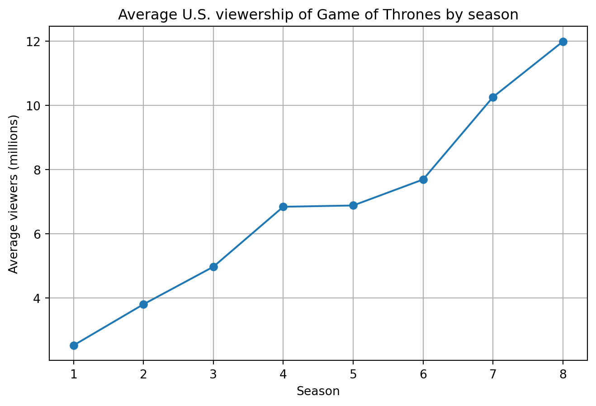
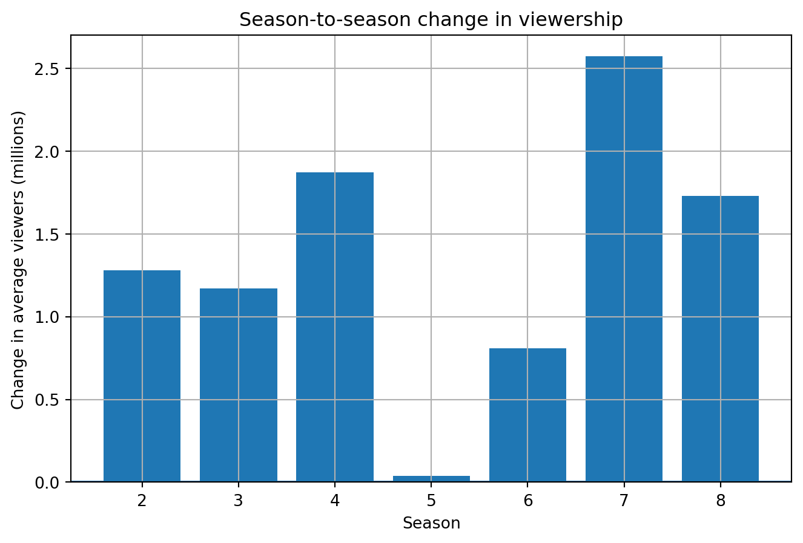

| season | avg_viewers_millions | season_to_season_change | |
|---|---|---|---|
| 0 | 1 | 2.52 | NaN |
| 1 | 2 | 3.80 | 1.28 |
| 2 | 3 | 4.97 | 1.17 |
| 3 | 4 | 6.84 | 1.87 |
| 4 | 5 | 6.88 | 0.04 |
| 5 | 6 | 7.69 | 0.81 |
| 6 | 7 | 10.26 | 2.57 |
| 7 | 8 | 11.99 | 1.73 |
Viewership Report: Game of Thrones
Introduction
Game of Thrones is an American fantasy drama television series based on George R. R. Martin’s novel series A Song of Ice and Fire. The show aired on HBO from 2011 to 2019 and consisted of eight seasons.
Data source
The data used in this report describes the average number of U.S. viewers per season of Game of Thrones. The values are measured in millions of viewers and are based on publicly available viewership tables from Wikipedia.
Basic statistics
count 8.000000
mean 6.868750
std 3.169887
min 2.520000
25% 4.677500
50% 6.860000
75% 8.332500
max 11.990000
Name: avg_viewers_millions, dtype: float64Viewership over time

Season-to-season changes

Observed changes
The average viewership of Game of Thrones increased strongly over time. In season 1, the show had an average of 2.52 million U.S. viewers. By season 8, this number had increased to 11.99 million viewers.
The average viewership increased by 9.47 million viewers between season 1 and season 8.
This represents an increase of approximately 375.8%.The largest season-to-season increase happened between season 6 and season 7. The average viewership increased from 7.69 million to 10.26 million viewers, which is a rise of 2.57 million viewers.
This suggests that the show became increasingly popular as it approached its final seasons. Unlike many long-running television series, Game of Thrones did not show a gradual decline in audience size. Instead, its average viewership reached its highest point in the final season.
AI use statement
Minor help from Generative AI was used to plan the structure of this report, prepare a draft of the explanatory text, and suggest Python code for the charts. The data, calculations, charts, and final wording were reviewed and edited manually.